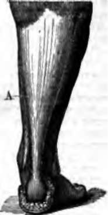

Tendons, Aponeuroses
Description
This section is from the book "Wonders Of The Human Body", by Auguste Le Pileur. Also available from Amazon: Wonders of the Human Body.
Tendons, Aponeuroses
In most of the muscles we can distinguish a fleshy portion, which is essentially the muscle, and a fibrous portion, which is called either tendon or aponeurosis according to its form. The tendons are fibrous cords of variable length, rounded or flattened, of a pearl-white colour, attached to the bones by one of their extremities and united to muscular fibres by the other. The aponeuroses are nothing but large thin tendons, a kind of fibrous web or band which accompanies the muscles, separating them by partitions or enveloping and uniting them in bundles. The tendinous fibres are generally developed in the substance of the fleshy part of the muscle, or on the surface, which they cover to a certain extent In the first instance they are inclosed, as it were, by the muscle; in the second, they envelop it like a sheath. This reciprocity gives great solidity to the whole.
The muscles and tendons are united together by the direct adherence of the extremities of their fibres, which takes place in right lines; or by the insertion of the fleshy fibres at some point in the length of the tendon, at various angles, but never exceeding 45 degrees. Such is the force of this adhesion between the two tissues that rarely if ever does external violence or the greatest effort succeed in overcoming it, the tendon or the muscle breaks before separating at their points of union. We have already pointed out, in speaking of the articular ligaments, the remarkable fact that the adhesion of two organic tissues is stronger than the cohesion of either of the respective tissues.
Fig. 14. Lower portion of the leg.
A. Tendon of Achilles.
The tendons and the aponeuroses, though very flexible, are entirely inextensible, and offer therefore great resistance to force applied to their length. This is one of the conditions necessary for the part which they play in uniting the organ of motion and the object to be moved.
Like the ossifying cartilages, the tendons may be considered as a transition tissue. They partially ossify with age at their points of insertion into the bones, but they are never entirely transformed in the human race, as in some animals, the Gallinaceae for example, into a bony trunk. Suppleness and variety of movement would not accord with this transformation; and among the differential marks which Plato might have added to his famous definition of man, this would have sufficed to prevent Diogenes from saying, as he exhibited the cock stripped of its feathers, " Behold Plato's man!"
A relatively slender tendon suffices to transmit a motive force developed by a certain amount of contractile fibre, and the fleshy portion of the muscles far surpasses in volume the tendons and the aponeuroses. If the muscular fibres attached themselves directly to the bones the surface of the bones would not be sufficient to supply space for them; this direct attachment to large surfaces is confined to a few only, the others being attached by their aponeuroses or tendons to limited spaces.
The muscles are at the same time contractile and extensible. The muscle shortens by contraction and increases in thickness at the same time that its length diminishes; in repose it is soft and yielding to touch, in contracting it becomes hard and resistant These successive changes are easily demonstrated by applying the hand to the course of a superficial muscle, on the front of the arm for example, on the biceps. When the fore-arm is extended it projects but slightly and yields to pressure; it swells, on the contrary, becomes resistant, and forms a marked protuberance, when contracting in order to flex the fore-arm.
The contraction of a muscle may also take place without its being shortened. When, for example, the fore-arm is extended upon the arm, if the extensors oppose the flexion by contracting, the biceps and anterior brachial, both flexor-muscles, may contract without their ends approaching each other.
Glisson, Borelli, and other anatomists have supposed that the muscle increases in volume during contraction; but further experiment, confirmed also by those of Prevost and Dumas, has demonstrated that it gains in thickness only what it loses in length, and that there is no change in the absolute volume.
In contracting, the muscular fibres become tortuous and wavy, wrinkles are formed on the surface, a sort of trembling pervades the whole mass, and its temperature is raised. Becquerel and Breschet have observed this increase to reach half a degree centigrade.
To the contraction of certain muscles must correspond the inertia or even lengthening of the antagonistic muscles, as for instance when the fore-arm is flexed upon the arm or the leg upon the thigh, the extensors of the fore-arm and of the leg take part in the movement and lengthen by means of their extensibility. In like manner the muscular texture which forms the walls of certain organs, as of the stomach and intestines, is expanded by the fluids and the aliments, or by the gases which are developed in them. The flute-player of antiquity kept his cheeks distended by means of a leather strap. Thus there is a constant struggle between the contractility and the extensibility of the muscles. But if, during the contraction of certain muscles, as the flexors of the arm, title antagonistic muscles, the extensors, are relaxed and do not oppose the movement, they regulate it nevertheless by virtue of a property named muscular tonicity, which gives to their tissues even when not contracted a certain power of resistance. Thus when a group of muscles is paralyzed, the antagonistic muscles cause by their contraction a jerking movement which has no regularity.
In contracting, the muscles act like levers upon the bones, and therefore just so much less powerfully as they are placed obliquely to the bone. Notwithstanding the larger part of the muscles are attached to the bones at an acute angle, and their direction is very oblique in regard to the lever they are to move. The result is a great loss of force, but this loss is compensated by an increase of volume in the muscles, that is in the number of fibres of which they are composed.
Most of the muscles are subject also to deviations or reflections around the joints. Some even take a direction perpendicular to their original one in turning round bony nooks or in the grooves of the pulleys. The apophyses, or the protuberances to which they are attached, permit them to move at a greater angle and a more favourable one than the initial angle, and this angle gradually increases as the bone obeys the force applied to it; and lastly, the relative direction of the muscle as regards the bone varies according to the attitude. These dispositions of the muscles are always adapted to the kind of movement to be executed, to the extent or rapidity required, or to the force demanded; and they are always so combined as to produce the maximum of useful result So in flexing the fore-arm, in elevating the arm, the bones act as levers of the third order. The biceps, anterior brachial, and deltoid muscles act as very short levers upon the arm, and their initial direction is almost parallel to the bone, but it soon becomes almost perpendicular to it. In this case extent and rapidity of movement are important, force is only a secondary consideration. If we wish to raise the body on the toes, motion is more limited but a great amount of force is necessary. The gastrocnemius and soleus muscles, which form the calf of the leg, are inserted by the tendon of Achilles—the largest in the body—to the posterior extremity of the calcaneum (or heel-bone), and perpendicular to its axis; the posterior tibial muscle and the flexors of the toes pass behind the internal malleolus under the calcaneum and under the astragalus, as in the groove of a pulley, and are inserted into the plantar surface of the scaphoid and to the last phalanges of the toes, and these muscles act upon the foot, which serves as a lever of the second order; that is to say, under conditions the most favourable to the power represented by the muscular contraction.
Continue to: